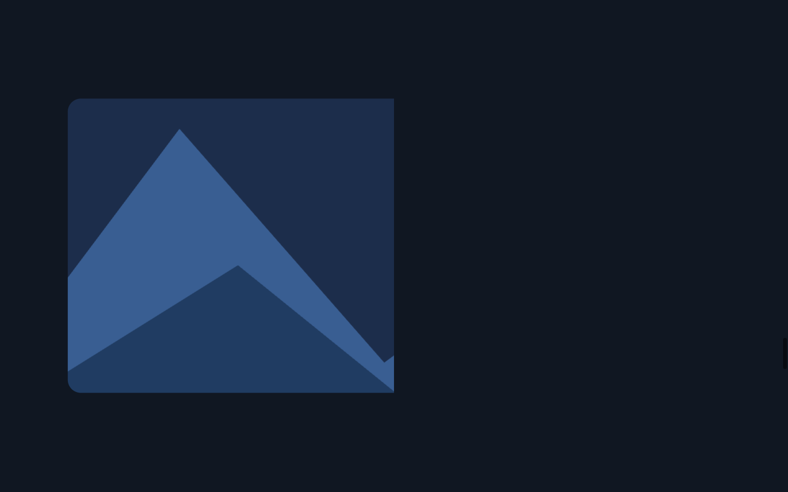
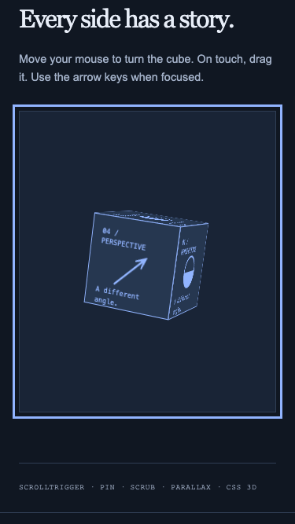
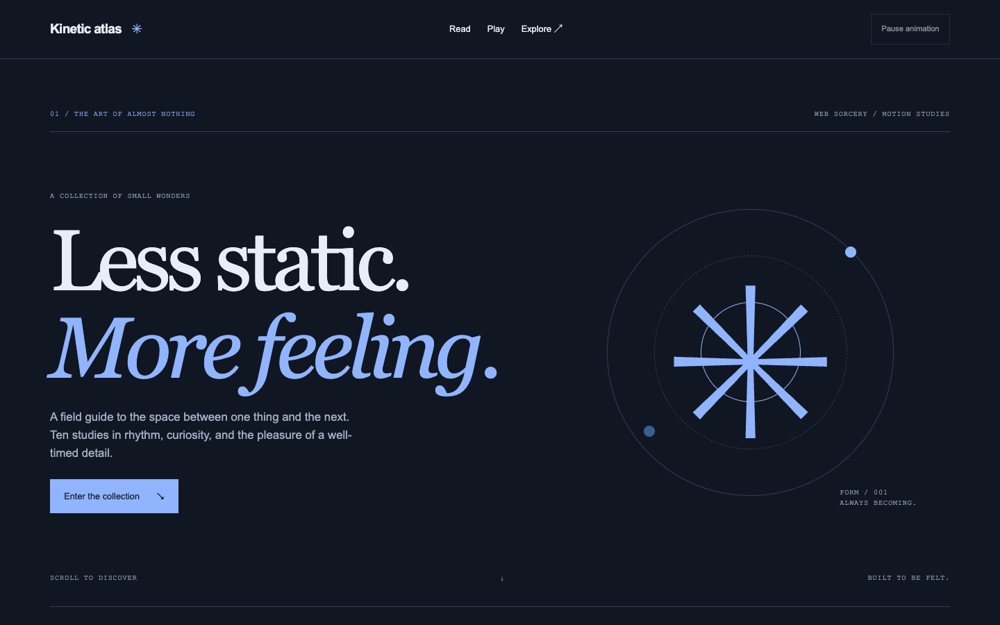
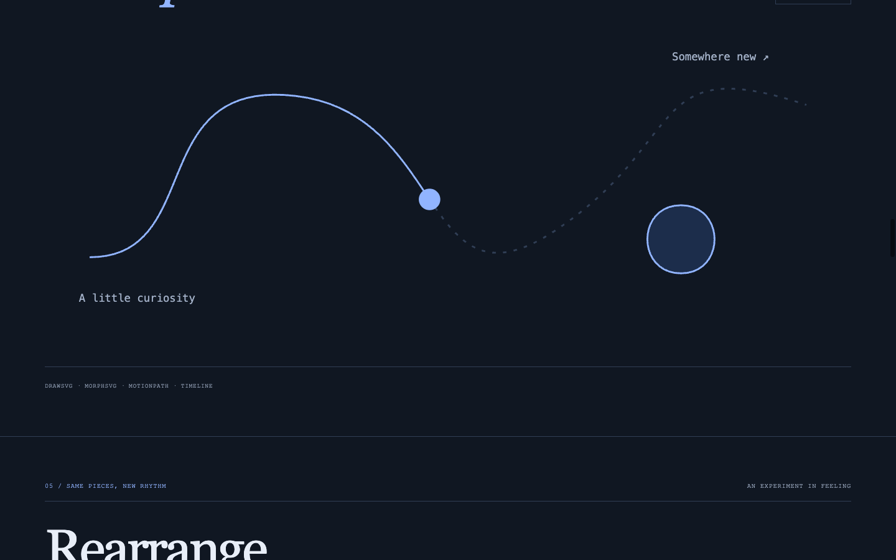

Ten studies in rhythm, curiosity, and considered interaction.
You are a senior front-end engineer with deep expertise in GSAP (GreenSock Animation Platform), ScrollTrigger, SplitText, Draggable, Flip, MotionPath, and modern HTML/CSS/JavaScript. Build a complete, self-contained landing page that serves as a showcase of GSAP animation techniques. **Container requirement:** Everything must live inside an element with the class `.gsap-container`. Use it as the single root wrapper for all sections, styles scoping, and script initialization. Scope all selectors and animations to this container so nothing leaks into the global page. **Output requirement:** The landing page should span up to 10 distinct screens (full-viewport sections), each demonstrating a cohesive group of the animation categories below. Combine categories freely where they strengthen the showcase. Every category must be represented somewhere on the page: - **Transform:** move, rotate, scale, skew - **Opacity:** fade in/out, crossfade - **Scroll-based:** ScrollTrigger, pinning, scrubbing - **Parallax:** elements moving at different speeds - **Text:** SplitText, typing, scrambling, reveals - **SVG:** path drawing, shape morphing - **Motion Path:** animation along custom paths - **Stagger:** sequential element animations - **Timeline:** complex synchronized sequences - **3D Transforms:** perspective, rotation, depth - **FLIP:** layout and position transitions - **Physics:** gravity, velocity, inertia - **Draggable:** drag, throw, snap - **Mouse interactions:** hover, cursor-following effects - **Touch interactions:** swipe, gesture-based animations - **Page transitions:** enter/exit animations - **UI animations:** menus, modals, accordions, sliders - **Image animations:** reveals, masks, zoom, clipping - **Canvas/WebGL:** animate graphical properties and objects - **Looping:** infinite loops, yoyo, repeat - **Easing:** bounce, elastic, spring-like motion - **Responsive animations:** different animations per breakpoint - **Scroll navigation:** smooth scrolling, scroll-to - **SVG/Canvas particles:** particle movement and effects - **Advanced effects:** magnetic buttons, infinite marquees, carousels, horizontal scrolling **Content:** Generate all required content yourself: headings, body copy, labels, and navigation text; images (use CSS gradients, inline SVG, or generated canvas graphics rather than external URLs that may break); and any SVG icons or shapes needed. **Technical standards:** - Deliver a single, runnable HTML file with embedded CSS and JavaScript, or clearly separated files if that is cleaner. Load GSAP and its plugins from the official CDN (cdnjs or jsDelivr), and register all plugins before use. - Use semantic HTML, accessible markup (proper headings, alt text, keyboard-operable controls, `prefers-reduced-motion` respected by disabling or simplifying motion). - Write modern, well-organized JavaScript: one initialization function per section, no global pollution, clean cleanup of ScrollTrigger instances on resize where needed. - Make layouts responsive across mobile, tablet, and desktop, and use `gsap.matchMedia()` for breakpoint-specific animations. - Handle touch and pointer events so Draggable, swipe, and mouse effects work on both desktop and mobile. - Ensure animations are smooth: animate transform and opacity where possible, and avoid layout thrashing. **Deliverable:** Produce the complete, working code, with a brief comment at the top of each section naming which animation categories it demonstrates. Use the same color theme
The standalone landing page and the existing GSAP page share ten semantic sections inside .gsap-container. Every requested technique appears in a cohesive demonstration, with original native artwork, the existing color theme, responsive variations, static reduced-motion compositions and explicit lifecycle cleanup.
{
"brief": "Build a complete, self-contained landing page that serves as a showcase of GSAP animation techniques. Use the same color theme.",
"container": ".gsap-container",
"screenLimit": 10,
"inputs": [
{
"path": "animations/kinetic-atlas/brief.md",
"type": "Markdown text brief",
"bytes": 3514,
"use": "Exact requirements and all 25 technique categories."
},
{
"path": "src/scss/base/_root.scss",
"type": "SCSS",
"bytes": 1234,
"use": "Existing blue, slate, paper and navy theme tokens, including dark mode."
},
{
"path": "src/pages/gsap-animations.njk",
"type": "Nunjucks",
"bytes": 293,
"use": "Mount the showcase in the existing GSAP page."
}
],
"technology": "GSAP, CSS perspective, inline SVG and Canvas 2D. No external image assets or Three.js needed.",
"assumptions": [
"Ten cohesive screens cover every requested category; pinning adds scroll distance without adding sections.",
"Page transitions are demonstrated as an accessible miniature site inside the UI screen.",
"A Canvas 2D constellation represents the Canvas/WebGL category.",
"Desktop pinning becomes flowing content on mobile or short viewports.",
"Reduced motion and user pause present static scenes while preserving direct UI interaction."
],
"scenes": [
"Arrival",
"Depth",
"Typography",
"Vector routes",
"Layout",
"Playground",
"Interface",
"Imagery",
"Constellation",
"Horizons"
],
"briefFile": "brief.md",
"dependencyVersion": "3.15.1",
"categories": [
"Transform",
"Opacity",
"Scroll-based",
"Parallax",
"Text",
"SVG",
"Motion Path",
"Stagger",
"Timeline",
"3D Transforms",
"FLIP",
"Physics",
"Draggable",
"Mouse interactions",
"Touch interactions",
"Page transitions",
"UI animations",
"Image animations",
"Canvas/WebGL",
"Looping",
"Easing",
"Responsive animations",
"Scroll navigation",
"SVG/Canvas particles",
"Advanced effects"
]
}
GSAP 3.15.1 and twelve plugins load from pinned jsDelivr URLs and register before use. CSS perspective supplies 3D transforms, while Canvas 2D fulfills the Canvas/WebGL category without adding a WebGL runtime. System fonts, CSS patterns and inline SVG eliminate external image and font dependencies.
sections.html is the canonical content. tools/sync-pages.py publishes it into index.html and src/pages/gsap-animations.njk. showcase.css scopes every selector to .gsap-container. showcase.js exports loadLibraries(), mountAnimation(container, options), and getAnimation(container). Each root owns its GSAP context, media conditions, event abort signals, observers and tickers. The returned API supports play(), pause() and idempotent destroy(). CONFIG holds shared timing, breakpoints, particle and snapping defaults; individual scene initializers group their detailed geometry and sequencing.
| Screen | Techniques |
|---|---|
| 01 / Arrival | Transform, opacity, stagger, timeline, magnetic button |
| 02 / Depth | Pinning, scrubbing, parallax, perspective and CSS 3D |
| 03 / Typography | SplitText, typing, scrambling, reveals |
| 04 / Vector routes | DrawSVG, MorphSVG, MotionPath |
| 05 / Layout | FLIP, grid/list transitions, stagger |
| 06 / Playground | Draggable, inertia, snapping, physics and bounce |
| 07 / Interface | Page transitions, crossfade, swipe, carousel, menu, modal, accordion |
| 08 / Imagery | SVG artwork, mask, clipping, reveal, zoom, cursor |
| 09 / Constellation | Canvas objects, particles, elastic burst, pointer attraction |
| 10 / Horizons | Horizontal scroll, marquee, repeat/yoyo, scroll navigation |
At 768px the desktop layout activates. Desktop pinning additionally requires at least 800px viewport height; mobile uses shorter depth travel, fewer particles and stacked finale cards. Container ResizeObserver refreshes layout through one scheduled frame. Fonts finish loading before SplitText runs. Motion is primarily transform/opacity; SVG drawing/morphing, clipping and canvas necessarily involve painting. Reusable pointer tweens, persistent particle data, capped DPR, offscreen/hidden-tab pausing and one GSAP clock bound ongoing work.
Semantic headings and real copy remain available without animation. SplitText uses accessible labels, controls support keyboard input, dialog/details remain native, and pointer gestures support touch. Reduced motion and the pause control build a calm static presentation. Source content and original art remain visible if dependencies fail; script-dependent controls stay disabled. Theme aliases inherit the host site; standalone fallbacks follow the system preference.
media = gsap.matchMedia(container);
media.add(
{
desktop: config.desktop,
mobile: config.mobile,
reduce: config.reduced,
room: config.pinHeight,
},
(match) => {
const events = new AbortController();
const disposers = [];
const ctx = gsap.context(() => {}, container);
const calm = match.conditions.reduce || userPaused;
const env = {
...libraries,
config,
root: container,
function initArrival(env) {
if (env.calm) return;
const { gsap, q, qa } = env;
const hero = q(".atlas-hero");
gsap
.timeline({
defaults: { ease: env.config.ease, duration: env.config.duration },
})
.addLabel("hello")
.from(q("h1"), { y: 28, opacity: 0 }, "hello")
.from(
hero.querySelectorAll(".atlas-copy, .atlas-primary, .atlas-eyebrow"),
{ y: 18, opacity: 0, stagger: env.config.stagger },
"hello+=0.15",
)
.from(
q(".atlas-core"),
{ scale: 0.3, rotation: -80, skewX: 12, opacity: 0, duration: 1.3 },
"hello",
);
const orbit = gsap.to(q(".atlas-orbit-a"), {
rotation: 360,
duration: env.config.loopDuration,
repeat: -1,
ease: "none",
paused: true,
});
function initImagery(env) {
const { gsap, q } = env;
const frame = q(".atlas-image-frame");
const shutter = q(".atlas-image-shutter");
if (env.calm) {
gsap.set(shutter, { scaleX: 0 });
return;
}
gsap
.timeline({
scrollTrigger: {
trigger: frame,
start: "top 85%",
function observeLoop(env, section, animation, render) {
let visible = false;
const sync = () => {
const active = visible && !document.hidden && !env.calm;
animation?.paused(!active);
if (render) {
env.gsap.ticker.remove(render);
if (active) env.gsap.ticker.add(render);
else if (visible) render();
}
};
const observer = new IntersectionObserver(
([entry]) => {
visible = entry.isIntersecting;
sync();
},
{ threshold: 0.05 },
);
observer.observe(section);
env.on(document, "visibilitychange", sync);
env.clean(() => {
observer.disconnect();
if (render) env.gsap.ticker.remove(render);
destroy() {
if (destroyed) return;
destroyed = true;
lifecycle.abort();
resize.disconnect();
cancelAnimationFrame(resizeFrame);
media?.revert();
container.innerHTML = originalMarkup;
[...container.attributes].forEach(({ name }) =>
container.removeAttribute(name),
);
originalAttributes.forEach(([name, value]) =>
container.setAttribute(name, value),
);
instances.delete(container);
},
};
try {
container.querySelectorAll("button").forEach((button) => {
button.disabled = false;
From the repository root: ```sh python3 -m http.server 8080 ``` Open either: - `http://localhost:8080/animations/kinetic-atlas/index.html` - `http://localhost:8080/gsap-animations.html` The existing project also supports: ```sh npm run dev npm run build ``` An HTTP server is recommended because browser module security can block `file://` imports. The CDN dependencies require an internet connection on a cold cache; content remains readable if loading fails.
Pass overrides to `mountAnimation(container, options)` or edit `CONFIG` at the top of `showcase.js`. | Key | Default | Effect | | ------------------ | ---------------------------------- | ---------------------------------------------------------------- | | `version` | `3.15.1` | Matching CDN dependency version; selected before library loading | | `desktop` | `(min-width: 768px)` | Desktop media condition | | `mobile` | `(max-width: 767px)` | Mobile media condition | | `pinHeight` | `(min-height: 800px)` | Minimum viewport height for desktop pins | | `reduced` | `(prefers-reduced-motion: reduce)` | Static presentation condition | | `ease` | `power2.out` | Default entrance curve | | `duration` | `0.7` | Default entrance duration | | `stagger` | `0.06` | Default entrance stagger | | `pinOffset` | `80` | Offset below the host site's header | | `loopDuration` | `28` | Orbit and marquee loop duration | | `dragGrid` | `24` | Playground snap distance | | `particlesDesktop` | `48` | Desktop particle count | | `particlesMobile` | `24` | Mobile particle count | | `particleDistance` | `100` | Maximum connection distance | | `pixelRatio` | `2` | Canvas pixel ratio cap | | `colors` | Blue light/dark fallbacks | Canvas theme fallback; CSS tokens normally supply the color | Scene-specific timing and geometry are grouped inside each initializer. The original content and its labels stay in semantic markup. CSS aliases inherit the site's `--color-*` tokens; standalone fallbacks follow the system light/dark preference.
Embedding: await loadLibraries(), then call mountAnimation(root, options). The result exposes play(), pause() and destroy(). Existing data-atlas roots mount automatically. Repeated mounting returns the current instance. Destroy restores initial markup/attributes and replaces descendant nodes, so use a dedicated root.
The production build, JavaScript syntax, Python tool syntax and formatting checks passed. Browser screenshots cover 375×667, 768×1024 and 1440×900. Checks exercise real mouse dragging, touch swipe emulation, keyboard movement, responsive resize, FLIP, physics, carousel, menu, dialog Escape, accordion, pause/play, reduced motion and zero remaining ScrollTriggers after destroy/remount. The integrated production page, light palette and blocked-CDN fallback passed. Runtime console errors: zero; warnings: zero.
{
"checks": [
{
"name": "mobile",
"tenSections": true,
"noHorizontalOverflow": true
},
{
"name": "tablet",
"tenSections": true,
"noHorizontalOverflow": true
},
{
"name": "desktop",
"tenSections": true,
"noHorizontalOverflow": true
},
{
"name": "interactive scenes",
"flip": true,
"keyboardDrag": true,
"physics": true,
"carousel": true,
"menu": true,
"dialogEscape": true,
"accordion": true,
"pauseResume": true
},
{
"name": "real pointer, touch and live resize",
"mouseDrag": true,
"touchSwipe": true,
"resize": true
},
{
"name": "reduced motion",
"noActiveInfiniteLoops": true
},
{
"name": "cleanup and remount",
"restored": true,
"ready": true,
"triggers": 0
},
{
"name": "production integration",
"tenSections": true
},
{
"name": "light theme",
"readable": true
},
{
"name": "offline fallback",
"readableSections": 10,
"disabledControls": true,
"artworkVisible": true
}
],
"errors": [],
"warnings": [],
"performance": {
"longTasks": []
}
}
A DevTools rendering trace was saved to checks/performance-trace.json. The separate 2.2-second steady-state canvas sample reported no long tasks. This short desktop test does not establish low-end-device FPS or field Core Web Vitals.



For atlas-route svg, move circle along with the scroll. But, it should start only when parent section at the center of the viewport
The route timeline now uses ScrollTrigger with CONFIG.routeStart="center center", CONFIG.routeEnd="bottom center", scrub:true and invalidateOnRefresh:true. The circle is initialized at the first path point. Drawing, travel and morph share a single scroll clock; the Travel again control returns the scrollbar to the start. Reduced motion retains the static endpoint. Browser checks verified zero progress before the center, 0.5 progress halfway, the exact endpoint, identical reverse positions, and no autoplay. Existing regression checks and the production build passed.

Also, add a section with 3D cibe. User should be able to rotate it with a mousemove
A dedicated cube subsection now accompanies the depth screen, preserving the ten primary screens. Six opaque CSS faces use perspective and preserve-3d. Mouse movement over the stage rotates the cube without clicking; touch users drag it, and keyboard users focus the stage and press arrow keys. Two reusable quickTo tweens smooth pitch and yaw without per-event tween allocation. The last orientation is retained on pointer leave. Pause/reduced motion provides a static cube. The existing context aborts pointer listeners, releases active capture and reverts transforms on cleanup.
CONFIG.cubePitch=-22, cubeYaw=32, cubeRange=160, cubeDragSensitivity=0.6, cubeKeyboardStep=15 and cubeResponse=0.35 expose the controls. Mouse-follow and arrow-key rotation passed in Chromium. Emulated touch changed yaw from 32 to 68 degrees. The production build and existing route, responsive, UI and lifecycle regression checks passed with no runtime console errors or warnings. Physical touch hardware remains untested.
{
"touchRotation": true,
"before": 32,
"after": 68,
"errors": [],
"warnings": []
}
atlas-image-frame should stay at the center of the screen while it's scaling.
The existing image timeline now pins .atlas-image-frame at center center for its complete scroll-linked zoom, shutter and clipping sequence. Pin spacing reserves the scroll interval, and the frame releases afterward. The same centered pin works when reversing upward. CONFIG.imageScrollFactor=1.2 and imageScrollMinimum=320 determine the responsive scroll range; invalidateOnRefresh recalculates it after layout changes. Reduced motion and user pause retain the static unpinned image.
The production build and focused browser checks passed at 375×667, 768×1024, 1440×900 and on the integrated site. Samples at 5%, 50%, 95%, and reverse 50% stayed within one CSS pixel of viewport center, with correct scaling and release. Reduced-motion pin removal and zero remaining ScrollTriggers after destroy passed. Console errors and warnings: zero. Results: checks/image-pin-results.json; tool: tools/verify-image-pin.mjs.
The complete category map, configuration, run commands, embedding instructions and browser notes are in README.md.